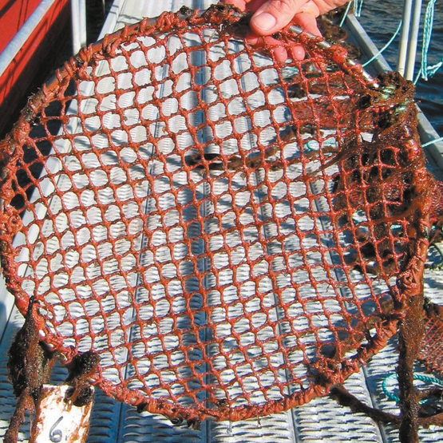

Netwax NI Gold er en særdeles effektiv impregnering for notposer/nøter, som reduserer groing, letter rengjøring og hindrer uttørking. Produktet er godkjent etter EUs kjemikalieforordning (BPR) frem til 2033.
Produkttypen har gjennomgått en rekke tester og miljødokumentasjoner. Disse er utført for å sikre optimal beskyttelse mot groe — med blant annet kontrollert utlekking av den aktive bestanddelen. Testene sikrer samtidig at produktet tilfredsstiller kravene til helse, miljø og sikkerhet for fisk og mennesker.
Eksempel på hvordan et stykke notlin holder seg etter en lengre periode i sjøen med Netwax NI Gold-impregnering.

Send forespørsel med antall nøter eller volum, så vender vi raskt tilbake med pris og leveringsbetingelser.